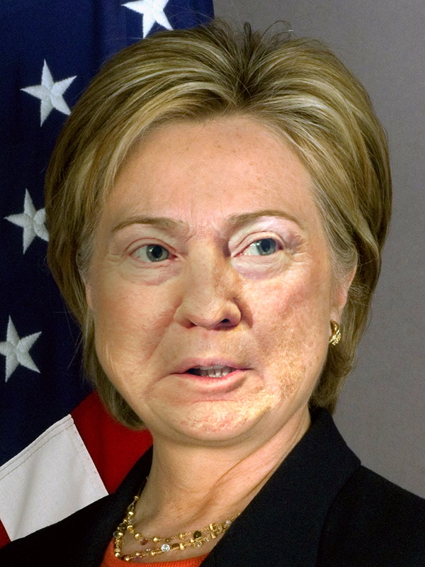
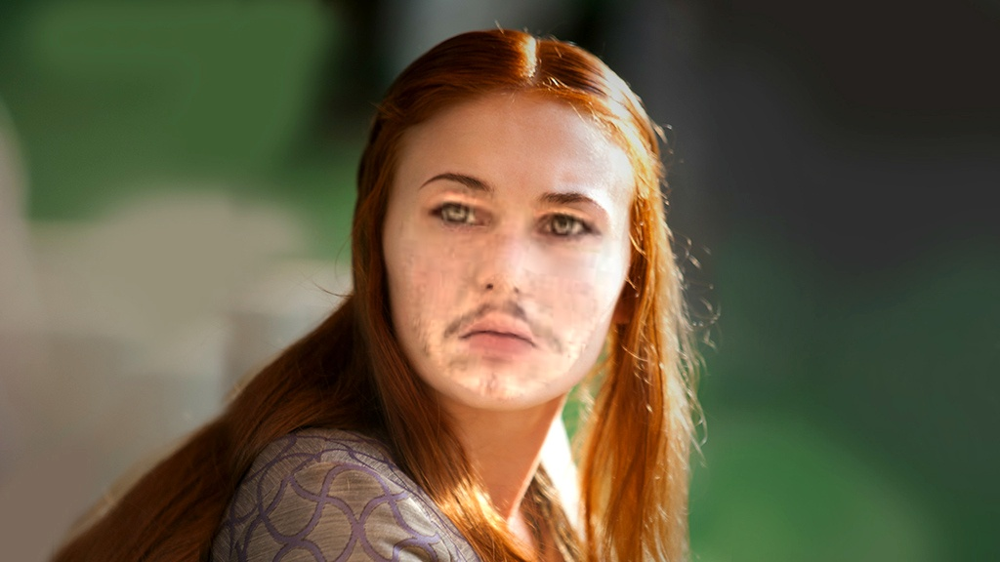
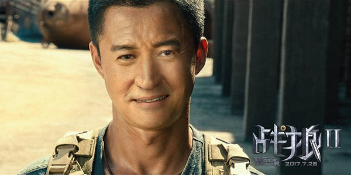

Introduction
Face Swap allows users to swap the face from one image onto the face(s) of another image using Python 3 with OpenCV and dlib. You can even swap the face from one image onto your own face via your webcam by using the 'Live' service.
In this demonstration, we will discuss how the Face Swap AI is implemented and take a look at a few examples. So, let's get started!
How It Works
In order to swap the face from one image (source) onto the face(s) of another image (destination), we must place the face from the source image on top of the face(s) in the destination image. While completing this process, we must remember that no two faces are alike; each face has its own unique geomerty. Thus, we must warp the face from the source image so that it will cover the face in the destination image while attempting to retain as many of its identiying features as possible.
The following is a step-by-step guide that will help you to understand how the Face Swap implementation is completed.
-
Facial Landmark Detection
First, we must detect the facial landmarks in the source and destination images. This project utilizes dlib, a pre-built model that detects 68 points within the human face, to analyze the images that are uploaded to the server. These 68 points are used as reference points and act as a basis for the Face Swap AI.
-
Find the Convex Hull
Next, we will use OpenCV to find the convex hull of the reference points that we identified in the previous step. The convex hull of a group of points is a tight fitting convex boundary around the points. We do this as not all reference points are required to successfully swap the face from the source image onto the face(s) of the destination image. We simply need the perimeter of the faces which is exactly what we are identfying in this step.
-
Delaunay Triangulation
Here, we use OpenCV to perform a delaunay triangulation of the points that make up the convex hull. Delaunay triangulation refers to the subdivision of the plane into triangles, with the points as vertices. Essentially, we are dividing the faces in the uploaded images into smaller parts in order to maintain as much consistency as possible when implementing the Face Swap AI.
-
Affine Warp Triangles
Next, we must affine warp the resulting triangles from the source image onto the resulting triangles of the destination image. However, this results in an image that looks very rough and unnatural. This is where seamless cloning, which we will discuss in the next step, becomes extremely useful.
-
Seamless Cloning
Seamless cloning, available through OpenCV, allows you to clone an object from one image and paste it onto another image producing a composition that appears completely natural. Thus, using this function, we can seamlessly paste the face from the source image onto the face in the destination image thereby completing the Face Swap AI.
Examples
| Source | Destination | Result |
|---|---|---|
 |
 |
 |
 |
 |
 |
 |
 |
Ainize
This project has been deployed on Ainize. Ainize is an all-in-one platform for simple AI development. Ainize Deploy allows users to run the latest open-source AI models with just one click; no need for any complex development environment or expensive GPU infrastructure.